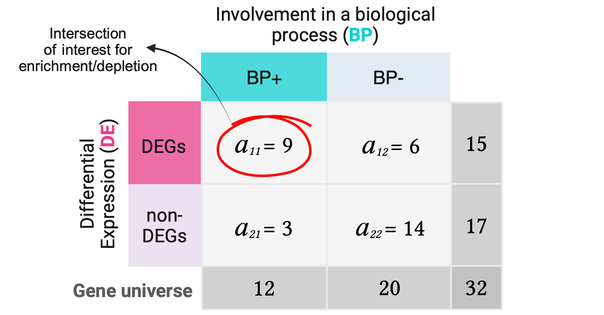
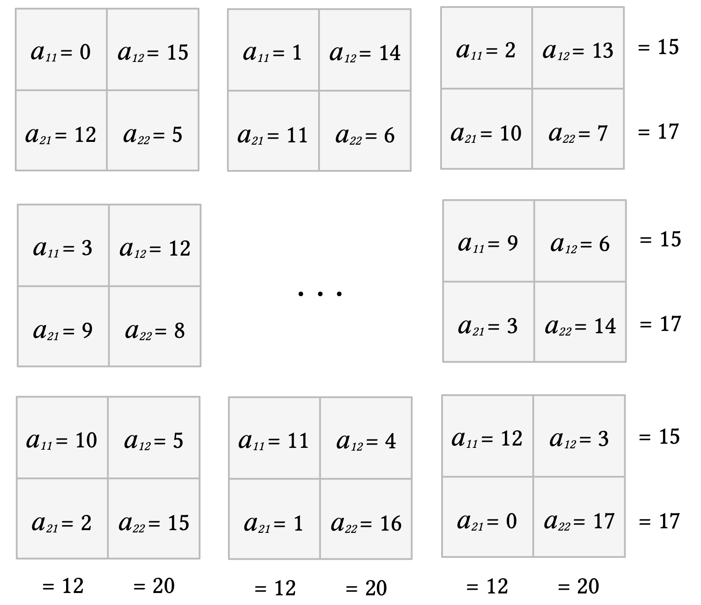
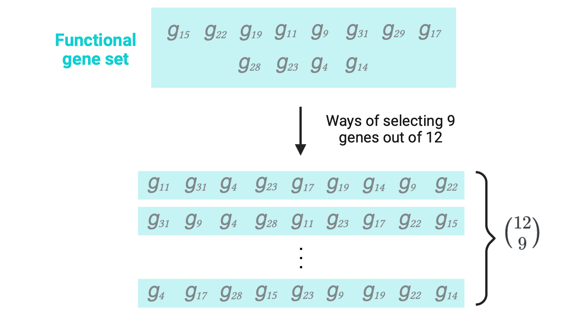
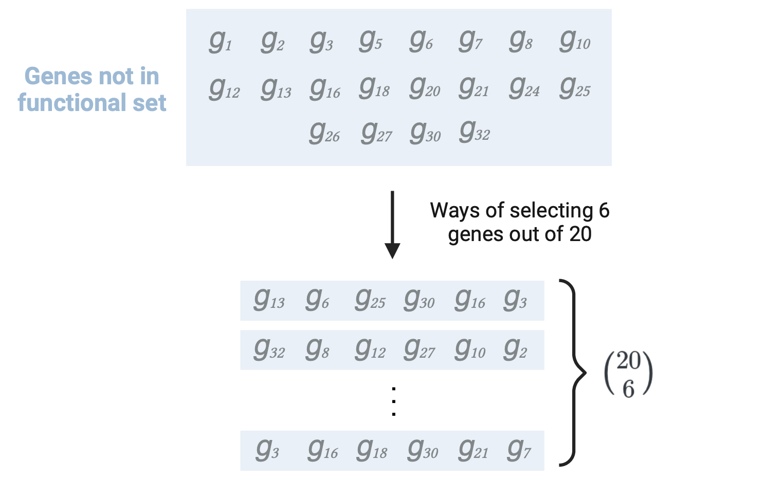
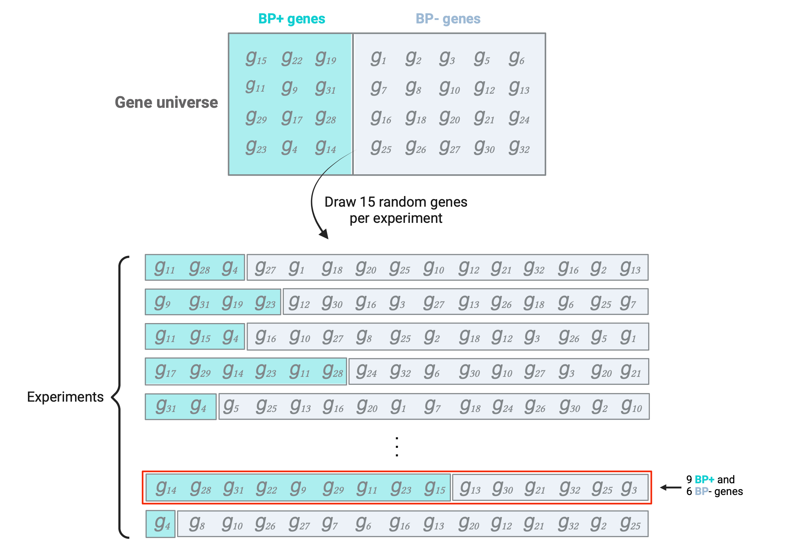
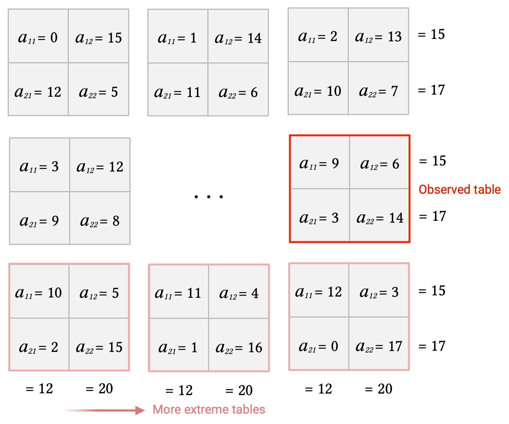
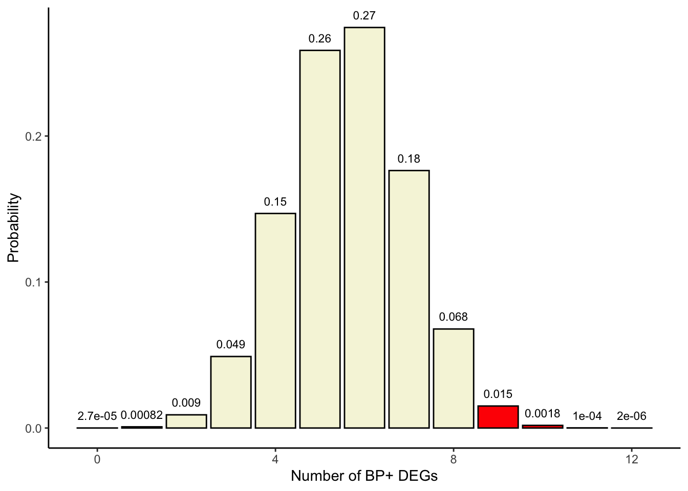
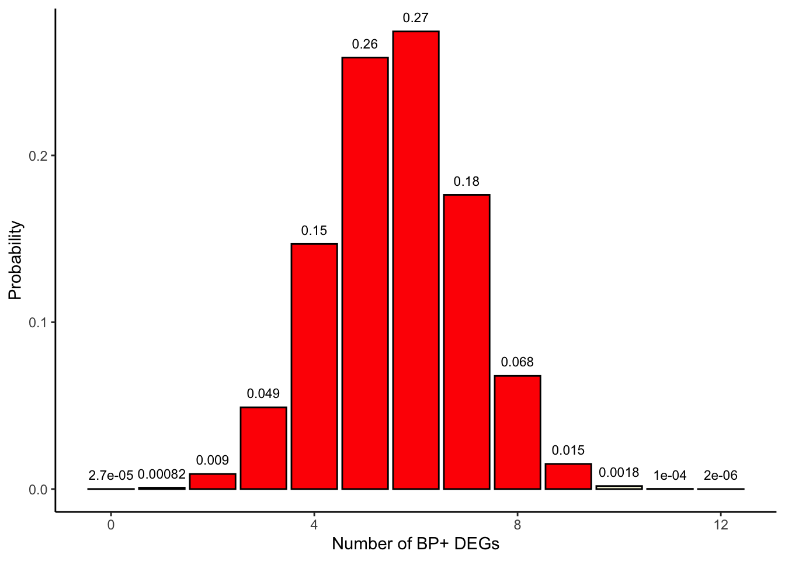

Fisher’s exact test for enrichment analysis of gene sets
Fisher’s exact test
overrepresentation
ORA
enrichment
Gene Set Enrichment Analysis
GO
KEGG
Functional enrichment
A complete and interpretable explanation of the Fisher’s exact test in the context of gene set-based enrichment analysis. The genomic applicability of this test is exemplified with a functional enrichment analysis for DEGs.
Author
Daianna Gonzalez-Padilla
Published
August 14, 2024
Introduction
Imagine you have analyzed high-throughput omics data and have ended up with a list of candidate/interest genes. These genes could be, for instance, differently expressed genes (DEGs), genes associated with a certain disease, genes affected by risk SNPs, markers for cell types, etc. Any list of experimentally-derived genes with biological or clinical relevance applies.
Now, what comes after that? If you found a few genes, you can do a little of research about them and make sense of your results, but what if you got thousands of genes? That’s not an easy task anymore and becomes unscalable. Moreover, despite each individual found gene providing valuable information, we can reveal more definite insights by studying all genes at the same time.
So what’s to do? We need to start thinking of these genes as a unique set with its own properties, and ask questions such as what do these genes have in common?what makes them being involved or affected by the condition under study, and what does that imply for cell functionality?
Functional enrichment analysis based on the one-sided Fisher’s exact test aims to test whether our genes as a set are associated with certain cellular properties or functions by assessing if sets of known genes that share biological activities or attributes (functional gene sets), have a statistically significant large overlap with our genes, i.e., if such functional gene sets are, what we call over-represented (or enriched, which is the same), among our genes. Stay on this post to learn more about how this test operates and how to understand and apply it to analyze sets of genes.
What you’ll learn here
Comprehend the purpose and the basics of a functional enrichment analysis based on gene sets.
Understand the probabilistic and statistic foundations of the Fisher’s exact test and interpret it with gene sets.
Clarify the required input gene sets to correctly perform this analysis.
Learn how to run this test using R.
Differentiate enrichment vs. depletion when performing this test.
The Fisher’s exact test
This is a classical statistical test based on the hypergeometric distribution (thus also called hypergeometric test) used to assess if there is a significant association between two categorical binary variables, such as differential expression of the genes and their involvement in a specific biological process. The association of the two variables is calculated in terms of the intersection size between their elements.
For illustrative purposes to show the application of this test for gene set-based functional enrichment analysis, imagine we have run a differential gene expression analysis (DGE) for a condition and have obtained a list of DEGs. As part of downstream analyses, we want to know how many of such DEGs participate in a specific biological process of interest and if that number significantly deviates from what is expected by chance.
In the next sections we’ll go into more detail on how to demarcate the required sets of genes, represent them in contingency tables, assess enrichment (or depletion) in R, and how to interpret this test and its results.
1. Creating and understanding contingency tables
The following are the required gene sets and their specifications. Please note that when referring to a set of genes, we are specifically referring to the set of gene IDs; that all we need to run this test!
Gene universe/background: these are all the genes that were experimentally measured and interrogated to generate the list of interest genes (our gene set). In our hypothetical scenario this is given by all genes that were assessed for DGE.
→ Let’s denote as “DE” the variable defining if a gene is differentially expressed (DEG) or not (non-DEG).
How to find my gene universe?
Since we are testing enrichment of functional gene sets among our DEGs, and not the other way around, our “gene universe” must correspond to the total number of genes for which we assessed DGE. Within those genes, categorized by DE, we search for genes contained in a functional set.
Experimentally-derived gene set (our gene set): a list of interest genes derived from our experimental measurements and analyses, and to which we want to assign biological meanings. In our example case this is the list of DEGs from the gene universe.
Functional gene set: a set of genes with shared biological attributes (e.g. participation in a pathway, implication in the same biological process, sharing a molecular activity, or if their gene products are located in a certain cell compartment). Conveniently, functional gene sets are accessible via databases such as Gene Ontology (GO)(Ashburner et al. 2000) and the Kyoto encyclopedia of genes and genomes (KEGG)(Kanehisa 2000).
→ Let’s denote as “BP” the variable determining if a gene is involved in the biological process (BP+) or not (BP-).
Important
There may be cases where you have some genes in your functional set that are not present in the gene universe. Since they were not tested for DGE we can’t categorize them as DEGs or non-DEGs. Despite this, given that most genes are non-DEGs and we often assume that, you can either consider them non-DEGs or exclude them from the analysis to avoid introducing ambiguous information.
Fisher’s exact test aims to detect functional gene sets whose genes are unusually represented (enriched/over-represented or under-represented) in our set of interest genes. That is, if there’s a large (or small) overlap between the genes of the functional set (BP+ genes in this case) and the genes we classified as relevant from our data (DEGs in this case).
Following our hypothetical example, let’s suppose we have analyzed DGE for a total of 32 genes and of these 15 were DEGs. Suppose we have a functional gene set containing 12 genes involved in a biological process (BP+) and of these 9 were DEGs. Having identified such gene sets, we proceed to create a 2x2 contingency table showing the number of genes that belong to each category for each variable.

The numbers of DEGs, non-DEG, BP+ genes, and BP- genes are called the marginal values, as they lie on the periphery of this 2x2 table. The middle cells (\(a\)’s) are the joint values, as they contain the overlap between the categories of the two variables.
Note
Note that by changing only one joint value, say \(a_{11}\), all the remaining joint values will be already determined since the marginals are fixed. In that way we can describe whole contingency tables with only their \(a_{11}\) corner values.
When we test for “association” between DE and BP note that it could be either positive or negative, with the former implying a larger overlap between DEGs and BP+ genes, and thus corresponding to enrichment, and the latter implying a smaller overlap and thus meaning depletion. We’ll also delve into the statistical implications of each type of association in the next section.
2. Testing for gene-set enrichment
The Fisher’s exact test is used to determine the probability of observing the joint value \(a_{11}\) in our table or a more extreme value (for contingency tables with the same fixed marginal totals) under the null hypothesis (\(H_0\)) that there’s no association between the categorical variables, i.e., that they are independent. These probabilities are referred to as p-values. Smaller probabilities offer strong evidence against the null hypothesis, which is translated into statistical evidence to accept the alternative hypothesis (\(H_A\)) of association between the two variables.
This is how it operates:
Given the fixed marginal totals, we first we compute all possible contingency tables by enumerating all possible joint values \(a_{11}\): in this case from 0 to 12, which are the minimum and maximum number of genes that can be both DEGs and BP+, respectively.

❗️ The top left cell (\(a_{11}\)) of each table always corresponds to the joint value positive for both variables under examination (BP+DEGs).
Then we estimate the probability of having such joint values in each contingency table under the null hypothesis. To do that we need to calculate the number of ways of obtaining the joint values by randomness in the gene selection process. Only 3 values need to be estimated for that:
The ways of selecting \(a_{11} + a_{12}\) = 15 genes (corresponding to the number of DEGs) without replacement from the total genes in the gene universe: \({a_{11} + a_{12} + a_{21} + a_{22}} \choose a_{11} + a_{12}\)
The ways of selecting \(a_{11}\) = 9 genes (number of BP+DEGs) without replacement out of the \(a_{11} + a_{21}\) = 12 genes in the functional set (BP+ genes): \({{a_{11} + a_{21}} \choose a_{11}}\)

The ways of selecting \(a_{12}\) = 6 genes (number of BP-DEGs) without replacement out of the \(a_{12}+a_{22}\) = 20 genes not in the functional set (BP- genes): \({a_{12}+a_{22}}\choose{a_{12}}\)

With these 3 values we define the probability of each table arrangement by:
This is precisely the probability function for the hypergeometric distribution, used for sampling without replacement and which we use to test the null hypothesis.
\(k\) is the sample size (number of DEGs) = \(a_{11} + a_{12}\) = 15
\(m\) is the number of successes in the population (number of BP+ genes) = \(a_{11} + a_{21}\) = 12
\(n\) is the number of failures in the population (number of BP- genes) = \(a_{12} + a_{22}\) = 20
\(x\) is the number of successes in the sample (number of BP+ among DEGs) = \(a_{11}\) = 9
\(k-x\) is the number of failures in the sample (number of BP- among DEGs) = \(a_{12}\) = 6
\(m+n\) is the population size (size of gene universe) = \(a_{11} + a_{12} + a_{21} + a_{22}\) = 32
How to interpret the above formula?
Basically, we are quantifying the number of ways of obtaining a sample of size \(k\) composed of \(x\) successes from a total of \(m\) successes in the population (\(m+n\)) AND the remaining \(k-x\) elements as failures from a total of \(n\) failures in the population; of all possible ways of randomly selecting \(k\) elements from the population.
Transferred to our scenario, think of it as having 15 chances to select genes without replacement from the universe that contains both BP+ and BP- genes. Repeat the experiment multiple times and count the times that 9 of the 15 genes you selected were BP+ (out of 12 BP+ genes in total) and the remaining 6 genes BP- (out of 20 BP- genes in total), over the number of experiments; that approximates your probability. This probability describes how likely it is to observe your table numbers (9BP+ and 6BP- genes in the sample of 15DEGs) just by chance.

For our actual contingency table \(p(x=9)=\frac{{12 \choose 9} \times {20\choose6}}{32\choose15}\):
Let’s use dhyper() to check the density function for the hypergeometric distribution with the above parameters and confirm we obtain the same probability for \(x\) = 9.
library(ggplot2)## Hypergeometric distribution parameters:## -x = 0:12 (a11 for all possible tables)## -m = 12 ## -n = 20## -k = 15probabilities <-dhyper(x=c(0:12), m=12, n=20, k=15, log =FALSE)xs <-c(0:12)df <-data.frame(x=xs, p=probabilities)df
# Bar plotggplot(df, aes(x=x, y=p, label=p)) +theme_classic() +geom_bar(stat="identity", fill="beige", colour="black") +geom_text(label=signif(probabilities, 2), y=probabilities, size=3, hjust=0.5, vjust=-1) +labs(x ="Number of BP+ DEGs", y ="Probability")
One-sided test
As mentioned before, we are not only interested in the probability of the observed contingency table but also in those for more extreme contingency tables, i.e., tables with greater \(a_{11}\)’s.

We add the probability of the actual table + the probabilities for such more extreme tables in order to get the probability of observing 9 or more DEGs that are BP+ under the null hypothesis:
## p(x>=9)sum(probabilities[10:13])
[1] 0.01698667
Since p<0.05 we reject the null hypothesis and accept that there’s an enrichment of BP+ genes amongst our DEGs, and hence the biological process has a significant positive association with differential gene expression.
This is called a one-sided Fisher’s exact test as we are evaluating probabilities of extreme values at only one side of the density curve (values \(a_{11}\)≥9 for enrichment; see plot below).
## Color in red those x>=9colors <-c(rep('beige', 9), rep('red', 4))df$colors <- colorsggplot(df, aes(x=x, y=p, label=p, fill=colors)) +theme_classic() +geom_bar(stat="identity", fill= colors, colour="black") +geom_text(label=signif(probabilities, 2),y=probabilities, size=3, hjust=0.5, vjust=-1) +labs(x ="Number of BP+ DEGs", y ="Probability")

We obtain the same result with fisher.test(alternative = ”greater”):
fisher.test(m, alternative ="greater")
Fisher's Exact Test for Count Data
data: m
p-value = 0.01699
alternative hypothesis: true odds ratio is greater than 1
95 percent confidence interval:
1.402791 Inf
sample estimates:
odds ratio
6.529133
Note
Note that the results of this test are the same for the transposed matrix, so if we put one or the other variable in columns or rows doesn’t affect as long as the first element of the table is the number of successes in the sample (BP+ DEGs).
## Matrixm
[,1] [,2]
[1,] 9 6
[2,] 3 14
## Transposed matrixt(m)
[,1] [,2]
[1,] 9 3
[2,] 6 14
## Fisher test on t(m)fisher.test(t(m), alternative ="greater")
Fisher's Exact Test for Count Data
data: t(m)
p-value = 0.01699
alternative hypothesis: true odds ratio is greater than 1
95 percent confidence interval:
1.402791 Inf
sample estimates:
odds ratio
6.529133
Assessing gene-set depletion?
What if we are not only interested in assessing the over-representation of gene sets in our experimentally-derived gene list, but also in their under-representation? There may be fewer BP+ genes in the group of DEGs than expected by chance. In such case we’d be assessing for a negative association between the variables and we need to sum the probabilities of our table and those that are less extreme.
## Color in red x<=9colors <-c(rep('red', 10), rep('beige', 3))df$colors <- colorsggplot(df, aes(x=x, y=p, label=p, fill=colors)) +theme_classic() +geom_bar(stat="identity", fill= colors, colour="black") +geom_text(label=signif(probabilities, 2),y=probabilities, size=3, hjust=0.5, vjust=-1) +labs(x ="Number of BP+ DEGs", y ="Probability")

In this case we use fisher.test(alternative = ”less”):
## p-value:sum(probabilities[1:10])
[1] 0.9980864
## Same with fisher.test(alternative = "less")fisher.test(m, alternative ="less")
Fisher's Exact Test for Count Data
data: m
p-value = 0.9981
alternative hypothesis: true odds ratio is less than 1
95 percent confidence interval:
0.00000 37.74069
sample estimates:
odds ratio
6.529133
Two-sided test
The two-sided Fisher’s exact test is based on both tails of the hypergeometric distribution and thus is used when we are interested in both enrichment and depletion, i.e., if there’s any association between the variables irrespective of the sign.
One approach to account for extreme values on both sides is to double the sum of the extreme tables’ probabilities at one side (one-sided p-value):
## p-value2*sum(probabilities[10:13])
[1] 0.03397334
A second approach is to add the one-sided p-value + all the probabilities that are less than or equal to the one for the observed table (probabilities for \(x\) = 0,1, and 2 in this example; see plot below).
We get the same result using fisher.test(alternative = ”two.sided”):
## With fisher.test(alternative = ”two.sided”)fisher.test(m, alternative ="two.sided")
Fisher's Exact Test for Count Data
data: m
p-value = 0.02688
alternative hypothesis: true odds ratio is not equal to 1
95 percent confidence interval:
1.120742 51.566943
sample estimates:
odds ratio
6.529133
What’s the odds ratio?
Odds of DE in BP+ genes = \(\frac{a_{11}}{a_{21}}\): how many times it is more likely to be a DEG than a non-DEG among the genes in the functional set.
Odds of DE in BP- genes =\(\frac{a_{12}}{a_{22}}\): how many times it is more likely to be a DEG than a non-DEG among the genes outside the functional set.
Then,
Odds of DE in BP+ vs. BP- genes = \(\frac{a_{11}}{a_{21}} / \frac{a_{12}}{a_{22}}\) = \(\frac{a_{11}\times a_{22}}{a_{12} \times a_{21}}\): how many times it is more probable to be a DEG among the BP+ genes than among BP- genes.
Same thing if we interchange the columns and rows:
Odds of being BP+ in DEGs = \(\frac{a_{11}}{a_{12}}\)
Odds of being BP+ in non-DEGs = \(\frac{a_{21}}{a_{22}}\)
Odds ratio (OR) = odds of being BP+ in DEGs vs. non-DEGs: \(\frac{a_{11}}{a_{12}} / \frac{a_{21}}{a_{22}}\) =\(\frac{a_{11}\times a_{22}}{a_{12} \times a_{21}}\)
If OR>1 then it is more likely to be a BP+ gene among the group of DEGs→ positive association between the two variables.
If OR<1 then is more likely to be a BP+ gene among the group of non-DEGs→ negative association between the two variables.
If OR≠1 then is either more or less likely to be a BP+ gene among the group of DEGs → there is an association between the two variables.
The OR returned by fisher.test() differs slightly from this formula as they are calculated based on the conditional maximum-likelihood estimate.
Conclusion
The one-sided Fisher’s exact test is a broadly used test in genomics to assess the enrichment of gene sets of interest in a list of genes resulting from high-throughput experimental measurements, drawing potential biological implications of interest from such assays. Its simple input requirements and statistical basis make it user-friendly and straightforward to implement. However, there are clarifications and caveats to consider:
Even though here we focused on the Fisher’s exact test, there are plenty of other methodological and statistical strategies to assess functional enrichment and gene-set enrichment more globally [https://academic.oup.com/bib/article/22/1/545/5722384]. (IS IT FUNCTIONAL SPECIFICALLY OR GSEA)
Here we exemplified the performance of this test with DEGs and functional gene sets, but this over-representation approach doesn’t restrict the analysis to them, not even to genes. You can conceive the enormous applicability of this test for any overlapping sets of biological features. The design and interpretation of your analysis will vary from case to case tho.
Intrinsic limitations of this test have been noted:
i) Even if it can be used to analyze any sets of features as mentioned previously, this test does restrict the analysis to overlaps between feature IDs (in which its simplicity lies), which means that relevant and informative feature metrics are cannot be incorporated, compared to functional class scoring (FCS) methods such as the gene set enrichment analysis (GSEA) developed in (Subramanian et al. 2005).
ii) When analyzing genes, which is usually the case, we assume they are independent features but that’s not necessarily true. Fisher’s test doesn’t take into account gene correlations.
Last reminder, Fisher’s exact test works to test enrichment but also depletion, careful with what you are looking to assess, how you run this analysis and how you interpret your results!
Hopefully at this point you have a clearer understanding around this test and feel more prepared to decide if this is appropriate to test your hypothesis based on your data.
Ashburner, Michael, Catherine A. Ball, Judith A. Blake, David Botstein, Heather Butler, J. Michael Cherry, Allan P. Davis, et al. 2000. “Gene Ontology: Tool for the Unification of Biology.”Nature Genetics 25 (1): 25–29. https://doi.org/10.1038/75556.
Kanehisa, M. 2000. “KEGG: Kyoto Encyclopedia of Genes and Genomes.”Nucleic Acids Research 28 (1): 27–30. https://doi.org/10.1093/nar/28.1.27.
Subramanian, Aravind, Pablo Tamayo, Vamsi K. Mootha, Sayan Mukherjee, Benjamin L. Ebert, Michael A. Gillette, Amanda Paulovich, et al. 2005. “Gene Set Enrichment Analysis: A Knowledge-Based Approach for Interpreting Genome-Wide Expression Profiles.”Proceedings of the National Academy of Sciences 102 (43): 15545–50. https://doi.org/10.1073/pnas.0506580102.